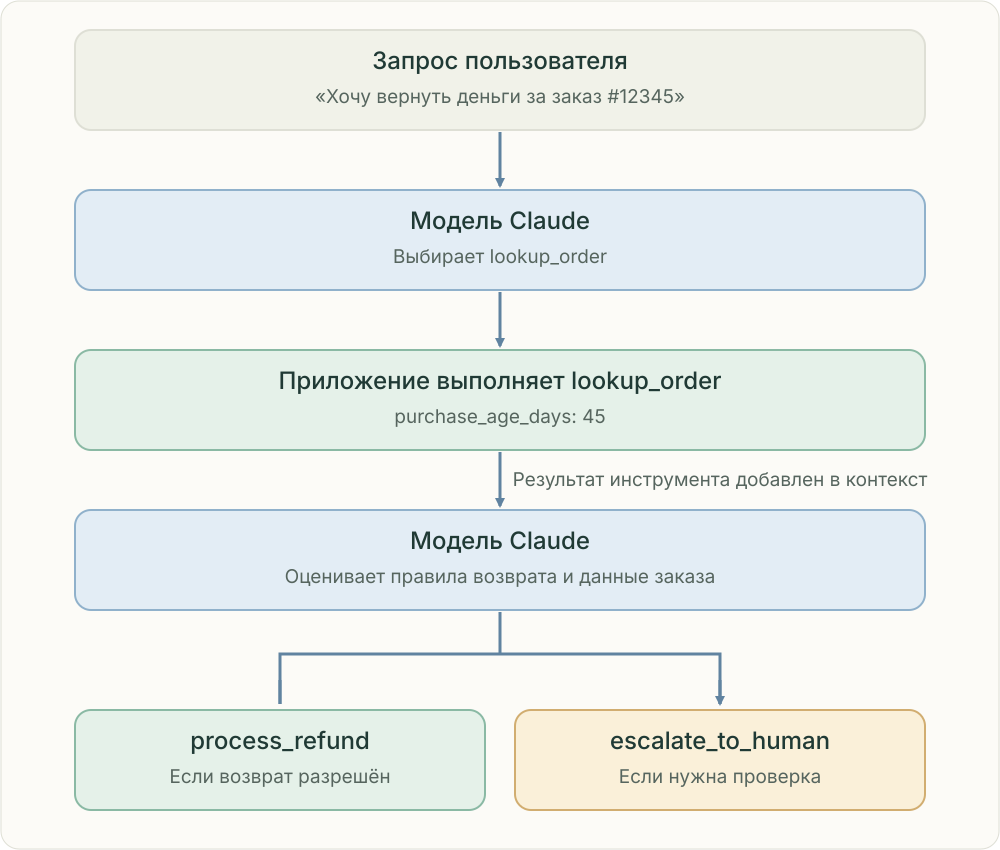

Упростите правильный выбор.
Инструментам нужны разные назначения, ясные схемы и предсказуемые результаты. Модель выбирает инструмент, код проверяет и выполняет вызов.

Модель выбирает инструмент, приложение выполняет его и возвращает результат в контекст. Затем модель выбирает следующий шаг с учётом правил.
Контракт для выбора
Опишите назначение, параметры, ограничения и поля результата. Понятные search_documents и fetch_document лучше пересекающихся универсальных инструментов.
Явная обработка ошибок
Различайте пустой ответ, неверный ввод, временный сбой и отказ доступа. Временные ошибки повторяйте ограниченно, ввод исправляйте, проблемы доступа сообщайте. Инструкции из документов считайте недоверенными данными.
Пример: запрос на возврат денег
Первый вызов модели выбирает lookup_order. Код приложения проверяет аргументы, получает заказ и передаёт результат следующему вызову модели. Возраст покупки 45 дней сам по себе не определяет право на возврат: нужны действующие правила и исключения. Модель может выбрать process_refund при выполнении условий или escalate_to_human при необходимости проверки. Перед финансовым действием приложение обязано проверить полномочия и правила возврата; повторный вызов не должен создавать повторную выплату.
Проверьте себя
Какого входа не хватает? Кто отвечает за следующий шаг? Какие доказательства нужно сохранить? Объясните причину ошибки до выбора компонента.
Источники и границы
Anthropic · How we built our multi-agent research systemAnthropic · When to use multi-agent systems
Независимое учебное пособие · Проверено 25 октября 2026.